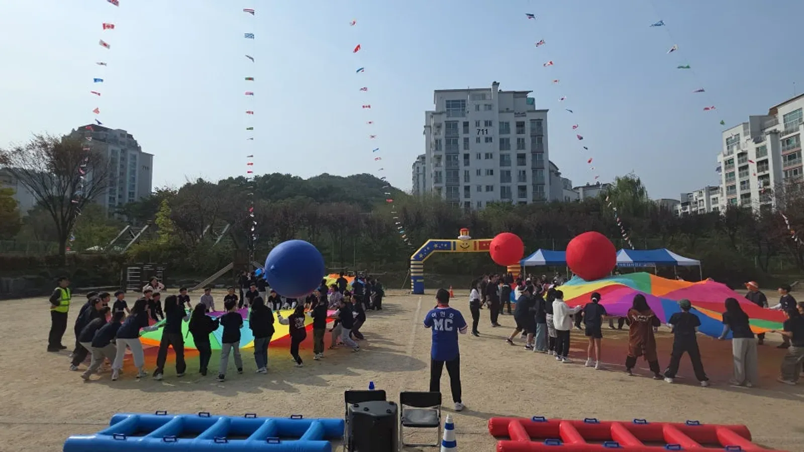

행사 준비 · 2026년 11월 21일
어린이집 크리스마스 행사, 공연과 참여 놀이의 차이
어린이집 크리스마스 행사는 아이들이 무엇을 보고 무엇에 직접 참여할지 구분하는 것부터 시작합니다. 공연을 바라보는 시간과 사회자를 따라 함께 반응하는 시간은 준비 방향이 다릅니다.
선물이나 장식을 늘리기보다 아이들에게 익숙한 놀이와 교사의 안내가 이어지는 연말 모임을 생각해 보세요.

- 공연 중심인지 함께 노는 시간 중심인지 먼저 비교합니다.
- 참여가 낯선 아이에게는 바라보며 익숙해질 여유를 둡니다.
- 교사는 아이들을 안내하고 사회자는 전체 분위기를 연결합니다.
- 가족 참여 유무와 연령 구성을 알려 필요한 프로그램을 상담합니다.

1. 어린이집 크리스마스 행사에서 중심을 고릅니다
공연을 감상하는 행사는 아이들이 무대의 소리와 움직임을 바라보는 시간이 중심입니다. 참여 놀이를 중심으로 하면 사회자의 말과 시범에 맞춰 아이들이 직접 선택하거나 반응하는 시간이 중심이 됩니다.
둘을 함께 구성할 수도 있지만 서로 다른 활동을 많이 붙인다고 좋은 행사가 되는 것은 아닙니다. 평소 아이들이 익숙하게 받아들이는 놀이와 행사에 참여할 연령 구성을 교직원이 먼저 살펴봅니다.
크리스마스 분위기는 인사와 음악, 함께하는 이야기의 주제로도 만들 수 있습니다. 행사에 등장하는 인물이나 장치가 낯선 아이도 있으므로 새로운 요소를 얼마나 넣을지 원의 분위기에 맞춰 결정합니다.
준비의 출발점은 아이들에게 어떤 시간을 남기고 싶은지 정하는 일입니다. 차분하게 함께 보는 모임인지 교사와 몸짓을 맞추며 노는 모임인지 한 문장으로 정리하면 프로그램을 덜어낼 기준도 생깁니다.
2. 관람과 참여의 차이를 표로 비교합니다
| 비교할 점 | 공연 중심 | 참여 놀이 중심 |
|---|---|---|
| 아이의 활동 | 무대를 바라보고 반응하기 | 사회자의 시범을 따라 선택하고 표현하기 |
| 구성의 중심 | 이야기와 장면의 흐름 | 쉬운 설명과 반복 가능한 놀이 |
| 교사의 역할 | 아이 곁에서 관람을 돕기 | 참여를 돕고 쉬고 싶은 아이를 살피기 |
| 사회자 상담 | 소개와 분위기 연결이 필요한지 | 직접 진행할 놀이의 범위가 어디까지인지 |
이 비교는 특정 공연의 섭외나 제공을 약속하는 목록이 아닙니다. 어린이집이 원하는 행사 형식을 먼저 고르고 사회자와 레크리에이션 등 실제 필요한 범위를 상담하기 위한 기준입니다.
공연을 보는 아이와 놀이에 참여하는 아이의 준비는 다릅니다. 관람 중심이라면 활동이 없는 시간이 얼마나 이어지는지 보고, 놀이 중심이라면 설명과 시범을 이해할 수 있는지 살핍니다.
3. 크리스마스 놀이는 익숙한 반응에서 시작합니다
반가운 인사를 몸짓으로 표현하거나 그림 속 선택을 손으로 알려 주는 식으로 이미 아는 반응을 활용해 볼 수 있습니다. 새 규칙을 여러 개 외워야 하는 경쟁보다 사회자가 보여 주고 함께 따라 하는 흐름부터 검토합니다.

사진에 보이는 큰 집단의 움직임을 유아에게 그대로 적용하지 않습니다. 참여할 아이들의 연령과 익숙함을 바탕으로 교직원이 활동 범위를 판단하고 사회자에게 원하는 방식을 설명합니다.
아이의 반응이 작다고 반복해서 이름을 부르거나 혼자 앞에 세우지는 않습니다. 친구와 교사를 바라보며 분위기에 익숙해지는 시간도 행사 안에 남겨 둡니다.
4. 가족 참여 여부에 따라 놀이의 초점이 달라집니다
아이들끼리 함께하는 행사인지 보호자가 함께하는 행사인지에 따라 설명의 대상이 달라집니다. 가족이 함께하더라도 보호자를 위한 경쟁이 중심이 되어 아이들이 오래 기다리는 구성이 아닌지 살펴봅니다.
가족과 같은 동작을 해 보거나 함께 선택을 맞추는 방식은 생각해 볼 수 있습니다. 보호자 참여가 어려운 아이도 있으므로 가족이 반드시 옆에 있어야만 할 수 있는 활동으로만 구성하지 않습니다.
모두 같은 속도로 반응해야 하는 놀이로 만들지 않습니다. 교사가 곁에서 도울 수 있는 방식과 잠시 쉬었다 다시 참여할 수 있는 방식을 함께 생각합니다.
가족 행사라는 이유로 갑작스러운 개인 발표를 요청하거나 아이를 다른 아이와 비교하는 말은 피합니다. 잘하고 못함을 가리는 표현보다 함께 시도했다는 점을 짚는 진행을 사회자와 협의합니다.
5. 사회자는 연결하고 교사는 아이 곁을 살핍니다
사회자는 전체가 알아들을 수 있도록 설명하고 다음 활동을 소개하는 역할을 상담합니다. 교사는 아이들의 상태와 익숙한 표현을 알고 있으므로 참여를 돕는 방식과 쉬어야 할 때의 대응은 원의 체계를 기준으로 정합니다.

사진에 큰 공이나 도구가 보인다는 이유로 같은 도구를 어린이집에 넣을 필요는 없습니다. 필요한 놀이를 먼저 정한 뒤 도구와 음향이 정말 필요한지, 장소에서 사용할 수 있는지 각각 확인합니다.
행사 전체를 외부 진행자에게 맡긴다는 말로 교사의 역할이 없어지는 것은 아닙니다. 아이들을 안내하는 역할과 객석을 향해 설명하는 역할을 구분하고 서로 어떤 상황을 알려야 하는지 상담합니다.
6. 상담에는 원하는 연말 분위기를 전합니다
행사 날짜와 지역, 장소, 참석 예정 인원과 연령 구성, 가족 참여 여부를 준비해 주세요. 공연을 중심으로 생각하는지 함께하는 놀이가 중심인지 적고 아직 정하지 못한 항목은 미정으로 남깁니다.
힐링엔터테인먼트는 대표 MC 이현호의 진행과 레크리에이션, 음향 등 필요한 범위를 상담합니다. 원에서 이미 준비한 활동을 알려 주면 외부 진행이 필요한 부분을 구분해 이야기할 수 있습니다.
아이들의 익숙함을 기준으로 필요한 만큼만 구성합니다. 학교·유아 행사 안내를 살펴보고 자동 견적서 또는 견적 문의에 원하는 분위기를 남겨 주세요.
특정 공연이나 장비의 제공 여부는 별도로 확인합니다.
자주 묻는 질문
크리스마스 행사에는 공연이 꼭 필요한가요?
필수로 정할 필요는 없습니다. 어린이집의 행사 목적과 아이들의 익숙함을 보고 관람, 참여 놀이 또는 두 방식을 함께 구성할지 결정합니다.
낯선 진행자에게 반응하지 않는 아이는 어떻게 하나요?
참여를 반복해서 요구하기보다 교사 곁에서 바라볼 수 있는 여유를 둡니다. 원에서 평소 사용하는 표현과 참여를 돕는 방식을 사회자에게 미리 알려 주세요.
사진 속 대형 도구를 어린이집 행사에도 넣을 수 있나요?
사진은 다른 연령과 장소의 참고 장면입니다. 그대로 적용하지 않고 실제 연령과 공간, 필요한 활동을 정한 뒤 사용 가능 여부와 적합성을 따로 상담합니다.
행사 날짜가 정해지셨나요?
날짜 · 지역 · 인원 · 행사 종류만 알려 주시면 행사에 맞춰 상담 · 견적을 안내드립니다. 행사 중엔 통화가 어려우니 문자 · 카톡을 남겨 주세요.